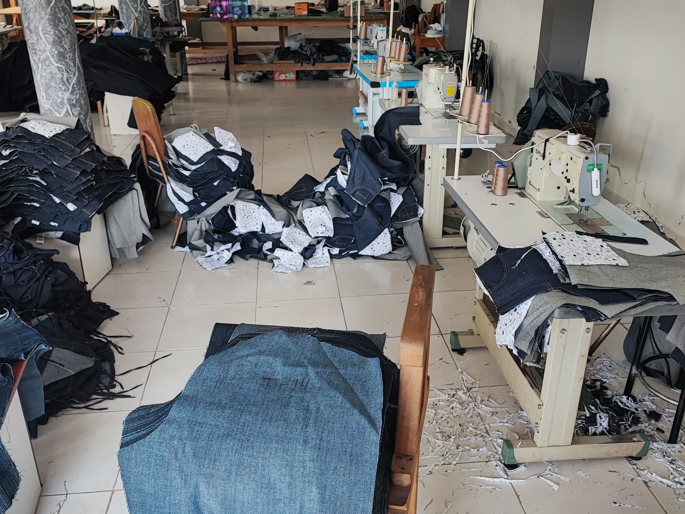

Si la ropa se ensucia de polvo, tierra o sudor, lo normal es que la lave el propio trabajador. Si se contamina con grasas, hidrocarburos, químicos, agroquímicos o fluidos biológicos, el lavado deja de ser un asunto doméstico y le corresponde a la empresa, porque mantener la prenda en condiciones es parte de la obligación de entregarla. Lo importante es definirlo por escrito antes de que aparezca el primer reclamo.

Es una de las preguntas que más aparece cuando una empresa formaliza su dotación, y casi nunca está resuelta por escrito. El resultado habitual es que cada trabajador lleva su ropa a casa, la mete en la lavadora familiar y el problema se traslada de la fábrica al domicilio. En algunos trabajos eso es perfectamente razonable. En otros es un riesgo que la empresa no debería estar trasladando.
El criterio general: depende de qué se ensucia la ropa
La ropa de trabajo común —la que se ensucia de polvo, sudor y tierra— la lava normalmente el trabajador, igual que cualquier prenda de uso diario. Nadie espera que una empresa recoja las camisetas de su equipo de ventas.
El criterio cambia cuando la prenda deja de ser solo ropa y pasa a ser parte de la protección o queda contaminada por la propia actividad. En esos casos el mantenimiento —lavado, revisión y reposición— forma parte de mantener el equipo en condiciones de uso, y eso le corresponde a quien está obligado a entregarlo, es decir, al empleador. Si te interesa el detalle de esa obligación, lo explicamos en la guía sobre qué obliga la ley al empleador en materia de dotación.
Cuándo el lavado deja de ser un asunto doméstico
Hay situaciones en las que mandar la ropa a la casa del trabajador traslada la contaminación a su familia. Las más frecuentes en Ecuador:
- Grasas, aceites e hidrocarburos. Talleres mecánicos, transporte pesado, mantenimiento industrial, operaciones petroleras.
- Productos químicos y solventes. Pintura, limpieza industrial, tratamiento de aguas, laboratorios.
- Agroquímicos. Fumigación y manejo de plaguicidas en floricultura, banano o cultivos de ciclo corto.
- Polvo metálico, fibras o partículas. Soldadura, metalmecánica, corte y pulido.
- Fluidos biológicos. Salud, alimentos, faenamiento, limpieza de instalaciones sanitarias.
El problema técnico se llama contaminación cruzada: la lavadora doméstica no separa, y lo que sale del overol se queda en el tambor y pasa a la ropa del resto de la casa. Por eso, en estos rubros, lo correcto es que la empresa se haga cargo del lavado.
Tres formas de resolverlo, con su costo real
1. Lavandería industrial contratada
La empresa retira, lava y devuelve. Es lo más limpio en términos de responsabilidad y lo más caro por prenda, pero deja trazabilidad y evita discusiones. Funciona bien desde unos 25 o 30 trabajadores en adelante, cuando el volumen justifica la ruta de recolección.
2. Dotación doble y mudas rotativas
Se entregan dos o tres juegos por persona para que siempre haya una muda limpia mientras la otra se lava. Es la fórmula más usada y la más barata de administrar: sube el costo inicial de la dotación, pero baja el costo de gestión y alarga la vida de cada prenda, porque ninguna se lava a diario.
3. Lavado en sitio
Lavadoras propias en la planta y ropa que no sale de la instalación. Es lo habitual en alimentos y en operaciones con requisitos sanitarios estrictos. Requiere espacio, agua y una persona a cargo.
| Situación | Quién debería lavar | Por qué |
|---|---|---|
| Oficina, ventas, bodega seca | El trabajador | Suciedad común, sin riesgo de contaminación |
| Taller, mecánica, transporte | La empresa (o dotación doble) | Grasa e hidrocarburos que pasan a la ropa familiar |
| Químicos y agroquímicos | La empresa, siempre | Riesgo de exposición para terceros en el domicilio |
| Prenda con reflectivo o de protección | La empresa supervisa el lavado | El lavado incorrecto degrada la prenda y su función |
| Alimentos y salud | La empresa, en sitio o con lavandería | Requisitos sanitarios y trazabilidad |
Déjalo por escrito, sea cual sea la decisión
Lo que genera conflicto no es quién lava, sino que nunca se dijo. Incluye una línea en el reglamento interno o en el acta de entrega: quién lava, con qué frecuencia, quién asume el costo y qué hacer cuando una prenda se daña. Dos frases evitan un año de reclamos.
El lavado industrial se come la ropa barata
Un dato que muchas empresas descubren tarde: el costo real de la dotación no está en el precio de compra, sino en cuántos lavados aguanta la prenda antes de que haya que reemplazarla. Una prenda económica que destiñe a los diez lavados y se rompe en la entrepierna al tercer mes obliga a comprar dos veces en el mismo año.
Por eso trabajamos con telas de algodón sanforizado: el sanforizado es un tratamiento previo que estabiliza el tejido para que no encoja de forma significativa con los lavados. En el pantalón Gregori 14oz eso se traduce en que la talla que entregaste en enero sigue siendo la misma talla en diciembre, y en que el color aguanta el ciclo repetido de lavado sin volverse gris.
Si tu equipo trabaja con grasa, el otro punto crítico es cómo se quita esa mancha sin arruinar el tejido. Lo explicamos paso a paso en cómo quitar grasa y aceite de la ropa de trabajo: usar cloro o agua hirviendo es el error más caro y más común.
Tres preguntas para tu proveedor antes de comprar
- ¿La tela es sanforizada? Si no lo es, calcula encogimiento y pide una talla más, con todo lo que eso complica.
- ¿Aguanta lavado industrial? Temperaturas altas y detergentes alcalinos no perdonan tejidos livianos ni tinturas pobres.
- ¿Pueden reponer unidades sueltas? Con mudas rotativas siempre falta una talla a mitad de año. Si el proveedor solo vende lotes completos, la dotación doble se vuelve inviable.
Si vas a montar el esquema de mudas rotativas, lo más práctico es cotizar el uniforme industrial completo por juego y multiplicar por dos, en lugar de comprar prendas sueltas a distintos proveedores.
¿Vas a montar mudas rotativas para tu equipo?
Cotizamos por juego completo y reponemos tallas sueltas durante el año. Telas de algodón sanforizado que aguantan el lavado repetido sin encoger ni destemplarse.
Escríbenos al WhatsApp Ver uniformes por juego